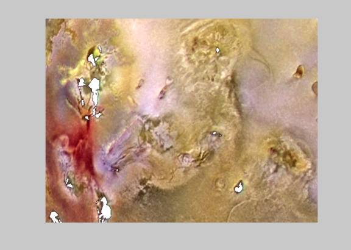
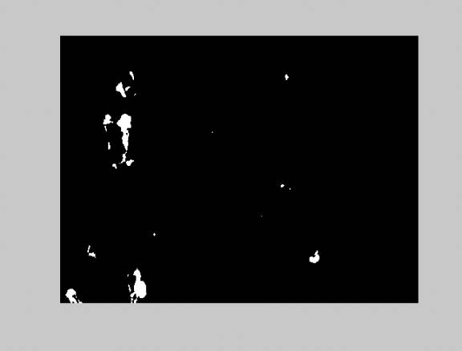

1/11/03
Goal: Write an algorithm to do perform color image
segmentation.
I implemented RGB color segmentation
in matlab. The algorithm divides the
image into three
color
planes and keeps an intensity range in a square region specified by the user in
each plane. All
other
intensities are set to zero. This is
equivalent to segmenting a small color cube out of the full
color
cube. A binary image is made out of the
three planes by looking for the non-zero entries in
all
three planes. The function prototype is
below.
function segimg=segment(img,R,G,B,Rrange,Grange,Brange)
R, G, and B specify the center of the cube to segment
from the full color
cube. Rrange,
Grange, and Brange are the half-lengths of the cube. I
tested the algorithm on the image below. I chose the following parameters
to segment out the dark regions.
|
R |
G |
B |
Rrange |
Grange |
Brange |
|
25 |
25 |
25 |
40 |
40 |
40 |
A) Original image.
B) Original image with segmentation overlay.
C) Segmentation only.


From B, you can see that the segmentation got all the dark areas (and possibly a little more)